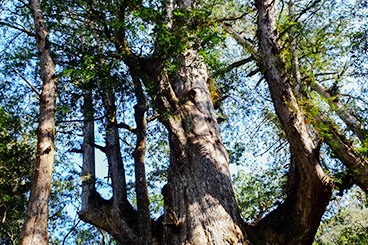
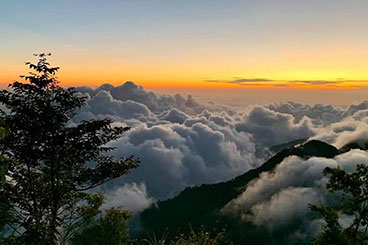
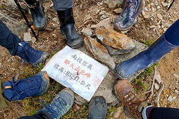

熱門目的地


季節精選

熱門推薦
《台灣屋脊》玉山主峰睥睨群山兩天兩夜 - 台北出發
日本人發現玉山高度超過富士山近200公尺，改玉山為「新高山」，週遭主要山峰以東西南北稱呼。玉山主峰為東、西、南、北峰所環繞，東望馬博拉斯山及秀姑巒山，西眺阿里山山脈，往南可見關山，北瞻則雪山、南湖大山、中央尖山等歷歷在望。
◎ 2024年度"雪季期"預計『為2024年1月1日起至3月31日止(依玉管處公告為準)』隊員具雪地經驗及裝備。
★溫馨提醒★此行程出發前30天抽籤，出發前35天截止報名其他玉山行程連結
NT7000起

台灣深度旅行
《共享部落》司馬庫斯巨木森林二日健行
上帝的部落 -
司馬庫斯Smangus，位於新竹縣尖石鄉，台灣最後一個黑暗部落。以傳統土地共有、合作共生的精神，共同經營部落，連結土地與人，並將泰雅民族文化、以及共享制度毫無保留地分享及傳達，給來此體驗的貴賓們。
2024年櫻花季開放結束，期待 2025櫻花季來臨。
NT5600起
《尼泊爾》ABC安納普娜基地營與普恩山14日健行
聖母峰，尼泊爾稱薩加瑪塔峰（尼泊爾語：सगरमाथा，轉寫：Sagarmāthā）海拔8848公尺，世界第一高峰，同時也是喜馬拉雅山脈的主峰，平均溫度在零下29度，在聯合國教科文組織已經將薩加瑪塔國家公園列入世界自然遺產之內。聖母峰基地營(Everest
Base Camp，EBC) 是要攀登聖母峰的登山者的主要路線之一，位於聖母峰山腳下有著世界海拔最高冰河的高山景觀。薩加瑪塔國家公園（尼泊爾語：सगरमाथा
राष्ट्रिय
निकुञ्ज）位於珠穆朗瑪峰南麓，同時也是尼泊爾旅遊勝地，位於首都加德滿都東北的第一省索盧坤布縣，北部與西藏珠穆朗瑪峰自然保護區接壤。薩迦瑪塔屬於一個特殊的地區，全區遍布形態各異的山脈、冰河和深谷。
NT42000起
.jpg)
登山健行
《台灣屋脊》玉山主峰睥睨群山兩天一夜 - 台中出發
日本人發現玉山高度超過富士山近200公尺，改玉山為「新高山」，週遭主要山峰以東西南北稱呼。玉山主峰為東、西、南、北峰所環繞，東望馬博拉斯山及秀姑巒山，西眺阿里山山脈，往南可見關山，北瞻則雪山、南湖大山、中央尖山等歷歷在望。
◎ 2024年度"雪季期"預計『為2024年1月1日起至3月31日止(依玉管處公告為準)』隊員具雪地經驗及裝備。
★溫馨提醒★此行程出發前30天抽籤，出發前35天截止報名其他玉山行程連結
NT5800起
《尼泊爾》EBC聖母峰基地營與GOKYO墎其爾湖18日健行
聖母峰，尼泊爾稱薩加瑪塔峰（尼泊爾語：सगरमाथा，轉寫：Sagarmāthā）海拔8848公尺，世界第一高峰，同時也是喜馬拉雅山脈的主峰，平均溫度在零下29度，在聯合國教科文組織已經將薩加瑪塔國家公園列入世界自然遺產之內。聖母峰基地營(Everest
Base Camp，EBC) 是要攀登聖母峰的登山者的主要路線之一，位於聖母峰山腳下有著世界海拔最高冰河的高山景觀。薩加瑪塔國家公園（尼泊爾語：सगरमाथा
राष्ट्रिय
निकुञ्ज）位於珠穆朗瑪峰南麓，同時也是尼泊爾旅遊勝地，位於首都加德滿都東北的第一省索盧坤布縣，北部與西藏珠穆朗瑪峰自然保護區接壤。薩迦瑪塔屬於一個特殊的地區，全區遍布形態各異的山脈、冰河和深谷。
即將開團
《泰雅部落巨木》司馬庫斯&鎮西堡檜木群二日
上帝的部落 -
司馬庫斯Smangus，位於新竹縣尖石鄉，台灣最後一個黑暗部落。以傳統土地共有、合作共生的精神，共同經營部落，連結土地與人，並將泰雅民族文化、以及共享制度毫無保留地分享及傳達，給來此體驗的貴賓們。鎮西堡具有雄偉壯麗的神木群景觀，與司馬庫斯隔一座山頭，同為泰雅族，族語稱「Cinsbu」意為「清晨時分，太陽第一個照耀之地，終年日照充足，土壤肥美。」，兩地表現了不同的風情與價值，值得一次來認識。
★溫馨提醒★此行程一次滿足大家兩個願望:踏入司馬庫斯巨木群步道+鎮西堡B區神木群 2024年櫻花季開放結束，期待
2025櫻花季來臨。
NT6200起

登山健行
《南疆聖域》北大武山兩天一夜(高雄出發)
北大武山，位於屏東瑪家鄉、泰武鄉與臺東縣金峰鄉交界，標高3,092M，南疆聖山、雲海的故鄉，台灣五岳之一。踏上中央山脈主稜，最巍峨高聳的北大武山，在森林裡持續的向上，來到3.8K被俗稱「光明頂」的喜多麗斷崖觀景台，金色滾動翻騰的雲海四處捲來，在山谷集中，稜線上的鐵杉，凋零卻用充滿生命力的彎曲的伸展枝幹，歷經重重考驗及體力的挑戰，終於踏上「南台灣屏障」北大武山三角點，瞬間忘卻一路艱辛的路程，感嘆自己的渺小。
★溫馨提醒★此行程屬5星行程，報名後請提供客服您近三個月內的爬山經歷，以利給予建議 ★溫馨提醒★此行程出發前30天抽籤，出發前35天截止報名
NT5800起

登山健行
《六人成行》免抽籤百岳 - 郡大山一天一夜(台北出發)
郡大山，台灣百岳排名54，全程沒有太困難或複雜的地形，是非常適合新手一日輕裝單攻的郊山化百岳。 ★溫馨提醒★此行程須於出發前4-5日申請入山證，出發前7日截止報名。
NT5200起


更多行程